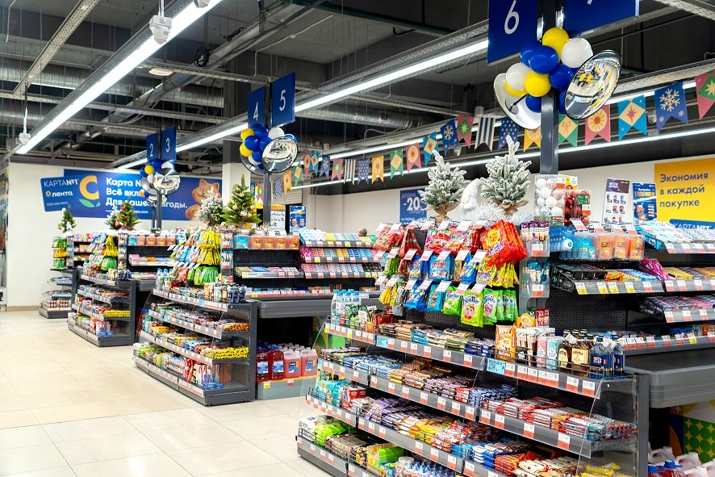

О компании
«Лента» — российская сеть гипермаркетов, основанная в 1993 году в Санкт-Петербурге.
Компания занимается развитием розничной торговли, электронной коммерции и доставкой продуктов.
Сегодня магазины «Лента» работают во многих регионах России и входят в число крупнейших ритейлеров страны.

Основные направления
- Гипермаркеты
- Супермаркеты
- Онлайн-доставка
- Программы лояльности
История развития
Первый магазин был открыт в Санкт-Петербурге. Со временем компания расширилась по всей стране.
В настоящее время «Лента» активно развивает цифровые сервисы, мобильное приложение и онлайн-заказы.
Миссия компании
Компания «Лента» стремится обеспечивать покупателей качественными товарами по доступным ценам. Основной целью сети является создание удобной, современной и технологичной среды для покупок.
Компания активно внедряет цифровые технологии, развивает онлайн-сервисы и улучшает качество обслуживания.

Цифровое развитие
«Лента» активно развивает мобильные приложения, программы лояльности и онлайн-доставку товаров.
Покупатели могут оформлять заказы через интернет, отслеживать скидки и пользоваться персональными предложениями.

Развитие по регионам
Магазины компании представлены во многих городах России. Сеть продолжает расширяться и открывать новые торговые точки.
Особое внимание уделяется современному дизайну магазинов, автоматизации процессов и качеству сервиса.